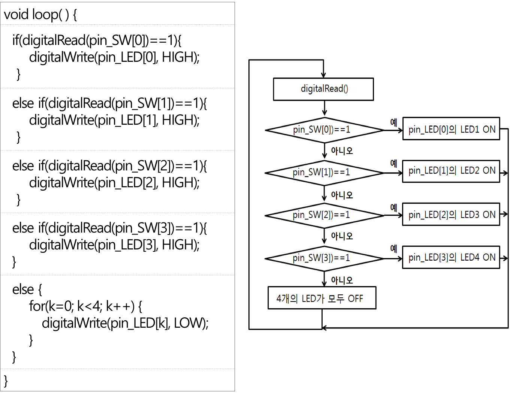
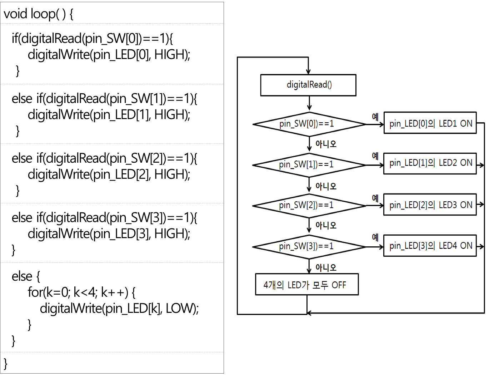

다양한 조건(디지털입출력 핀을 통하여 입력받은 값이 무엇인지)에 따라 LED를 제어하는 방법을 알아본다.

다양한 조건(디지털입출력 핀을 통하여 입력받은 값이 무엇인지)에 따라 LED를 제어하는 방법을 알아본다.
베이스보드 + Uno 보드, 전원연결선 1개, 연결선 8개

버튼 스위치를 통하여 디지털입력을 받아들이고, 그 입력 된 정보에 따른 결과를 확인하기 위하여 LED를 사용한다.
HIGH가 입력
LOW가 입력

Switch 및 LED 연결
입출력 설정
void setup( ) {
pinMode( 2, INPUT );
pinMode( 10, OUTPUT );
}디지털입출력 핀 2번으로 입력을 받는 명령
digitalRead(2);조건문
입력된 값이 어떤 값인지에 따라 프로그램 제어 흐름 변경


완성된 Sketch 프로그램
/*
디지털입출력 핀 2번으로 버튼 스위치의 값을 받아들여
버튼 스위치가 눌려지면(HIGH), 디지털입출력 핀 10번에 연결된 LED ON
버튼 스위치가 눌려지지 않으면(LOW), LED OFF
*/
void setup( ) {
pinMode(2, INPUT); // 디지털입출력 핀 2번을 입력으로 설정
pinMode(10, OUTPUT); // 디지털입출력 핀 10번을 출력으로 설정
}
void loop() {
int sw_in=digitalRead(2); // 핀 2번에 연결된 버튼 스위치 값을 읽어옴
if(sw_in==1) { // 버튼 스위치가 눌러지면
digitalWrite(10, HIGH); // 디지털입출력 핀 10번에 연결된 LED ON
}
else digitalWrite(10, LOW); // 버튼 스위치가 눌러지지 않았으면, 디지털입출력 핀 10번에 연결된 LED OFF
}버튼 스위치가 눌려지면 각 스위치에 지정된 LED가 켜지도록 제어(if-else문 사용)

Switch 및 LED 연결

 

/*
4개의 스위치와 4개의 LED를 이용한 입출력 제어
- 만약 2번 핀에 연결된 버튼이 눌러지면, 8번 핀에 연결된 LED를 ON
- 만약 3번 핀에 연결된 버튼이 눌러지면, 9번 핀에 연결된 LED를 ON
- 만약 4번 핀에 연결된 버튼이 눌러지면, 10번 핀에 연결된 LED를 ON
- 만약 5번 핀에 연결된 버튼이 눌러지면, 11번 핀에 연결된 LED를 ON
- 그렇지 않은 모든 경우에 모든 LED는 OFF
*/
int pin_SW[4] = {2,3,4,5}; // pin_SW 배열 선언 및 초기화
int pin_LED[4] = {8,9,10,11}; // pin_LED 배열 선언 및 초기화
int k;
void setup() {
for (k=0; k<4; k++) {
pinMode(pin_SW[k], INPUT); // 핀 번호 pin_SW[k]를 입력으로 설정
pinMode(pin_LED[k], OUTPUT); // 핀 번호 pin_LED[k]를 출력으로 설정
}
}
void loop() {
if (digitalRead(pin_SW[0]) == 1) { // 핀 번호 pin_SW[0]에 연결된 버튼이 눌러지면
digitalWrite(pin_LED[0], HIGH); // 핀 번호 pin_LED[0]에 연결된 LED를 ON
} else if (digitalRead(pin_SW[1]) == 1) { // 핀 번호 pin_SW[1]에 연결된 버튼이 눌러지면
digitalWrite(pin_LED[1], HIGH); // 핀 번호 pin_LED[1]에 연결된 LED를 ON
} else if (digitalRead(pin_SW[2]) == 1) { // 핀 번호 pin_SW[2]에 연결된 버튼이 눌러지면
digitalWrite(pin_LED[2], HIGH); // 핀 번호 pin_LED[2]에 연결된 LED를 ON
} else if (digitalRead(pin_SW[3]) == 1) { // 핀 번호 pin_SW[2]에 연결된 버튼이 눌러지면
digitalWrite(pin_LED[3], HIGH); // 핀 번호 pin_LED[3]에 연결된 LED를 ON
} else { // 아무 버튼이 눌러지지 않은 경우, 모든 LED를 OFF
for (k=0; k<4; k++) {
digitalWrite(pin_LED[k], LOW);
}
}
}버튼 스위치 4개로 아래 표와 같이 LED의 동작 기능을 제어하여 보자.

int pin_SW[4] = {2,3,4,5};
int pin_LED[4] = {8,9,10,11};
int k;
void setup() {
for (k=0; k<4; k++) {
pinMode(pin_SW[k], INPUT);
pinMode(pin_LED[k], OUTPUT);
}
}
void loop() {
// 이 부분에 코드를 추가 하세요.
}2.2절의 예제코드에서 스위치의 우선순위를 정하여 두 개 이상의 스위치가 동시에 눌려졌을 때 우선순위가 높은 스위치의 제어만 이루어지도록 스케치를 만들어 보자.
4개의 스위치를 사용하여 LED 4개가 모두 깜박이는 속도를 4단계로 조정하는 스케치를 만들어 보자.